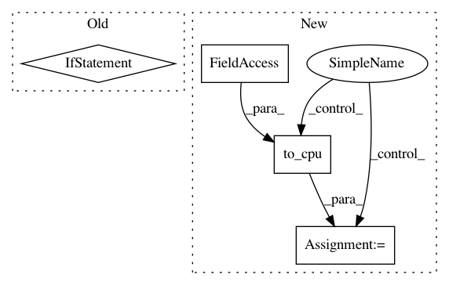

d37d08d9b2a806b3345fba41711c0d517b92a65c,chainercv/links/model/vgg/vgg16.py,VGG16Layers,predict,#VGG16Layers#Any#,215
Before Change
imgs = chainer.Variable(imgs)
y = self(imgs).data
if self.do_ten_crop:
n = y.shape[0] // 10
y_shape = y.shape[1:]
y = y.reshape((n, 10) + y_shape)
y = self.xp.sum(y, axis=1) / 10
return cuda.to_cpu(y)
def _max_pooling_2d(x):
After Change
activation = self._gather_ten_crop(activation)
activations[name] = cuda.to_cpu(activations)
else:
activations = cuda.to_cpu(activations.data)
if self.do_ten_crop:
activations = self._gather_ten_crop(activations)
return activations
def _gather_ten_crop(self, y):
In pattern: SUPERPATTERN
Frequency: 3
Non-data size: 4
Instances
Project Name: chainer/chainercv
Commit Name: d37d08d9b2a806b3345fba41711c0d517b92a65c
Time: 2017-06-15
Author: yuyuniitani@gmail.com
File Name: chainercv/links/model/vgg/vgg16.py
Class Name: VGG16Layers
Method Name: predict
Project Name: chainer/chainerrl
Commit Name: 93d87b907ff5ef42753492c79e602b31f9e7df00
Time: 2018-11-03
Author: seann999@gmail.com
File Name: chainerrl/agents/categorical_dqn.py
Class Name: CategoricalDQN
Method Name: _compute_loss
Project Name: chainer/chainerrl
Commit Name: 67d13b4ba91b23ad29f660aae68a01ddbd809530
Time: 2018-10-16
Author: muupan@gmail.com
File Name: chainerrl/agents/ppo.py
Class Name: PPO
Method Name: act_and_train